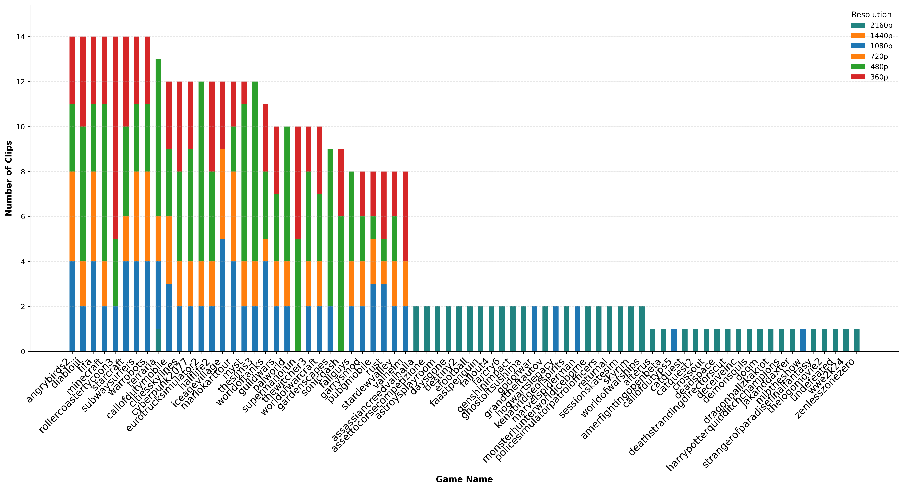

Accepted at ICIP 2026
GameScope: A Multi-Attribute, Multi-Codec Benchmark Dataset for Gaming Video Quality Assessment
4K
Max Resolution
60
Max FPS
Multi
Codecs
4,048
Video Clips
Data Distribution
Distribution of video clips by resolution across different content types.

Figure 1: Comparative analysis of clip counts grouped by resolution for Playstation 5 (high-fidelity) and User Generated Content (varied quality). The dataset ensures balanced representation across standard streaming resolutions.
Metadata Visualizations
All copied GamingVQA visualization artifacts are available here, including clip-count and score-distribution plots.
Video Gallery
Explore samples filtered by platform, clarity, artifact severity, and immersion level.
Initializing Dataset...